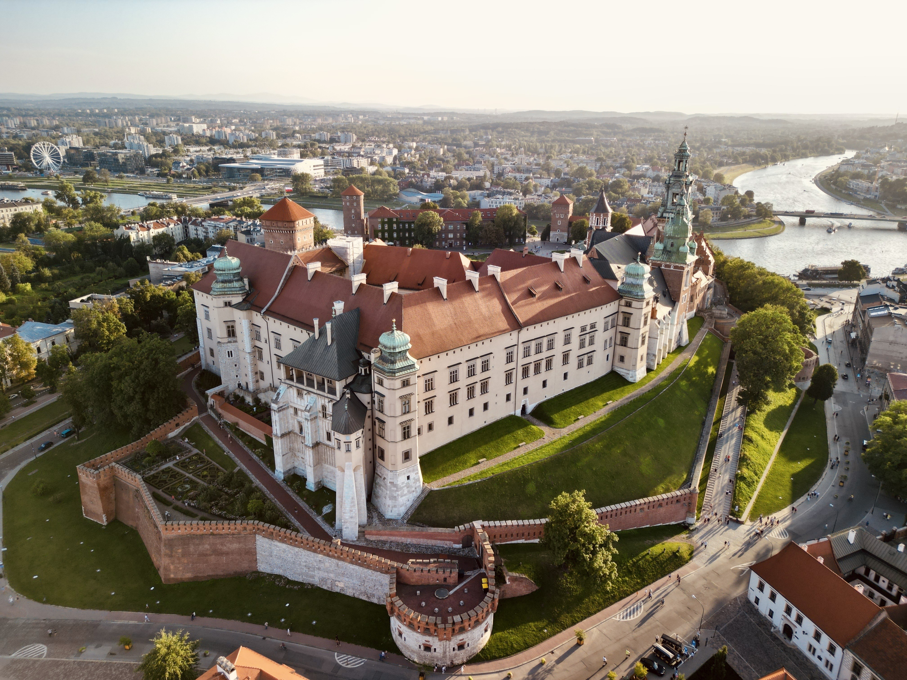
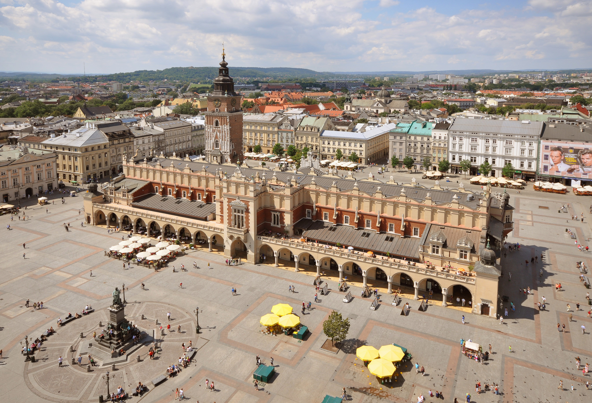
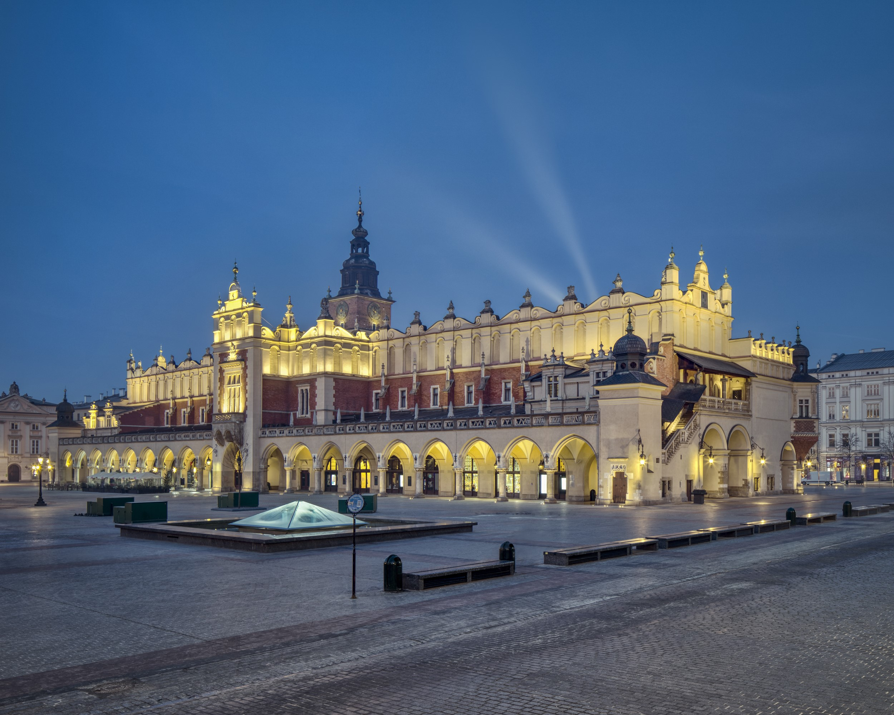
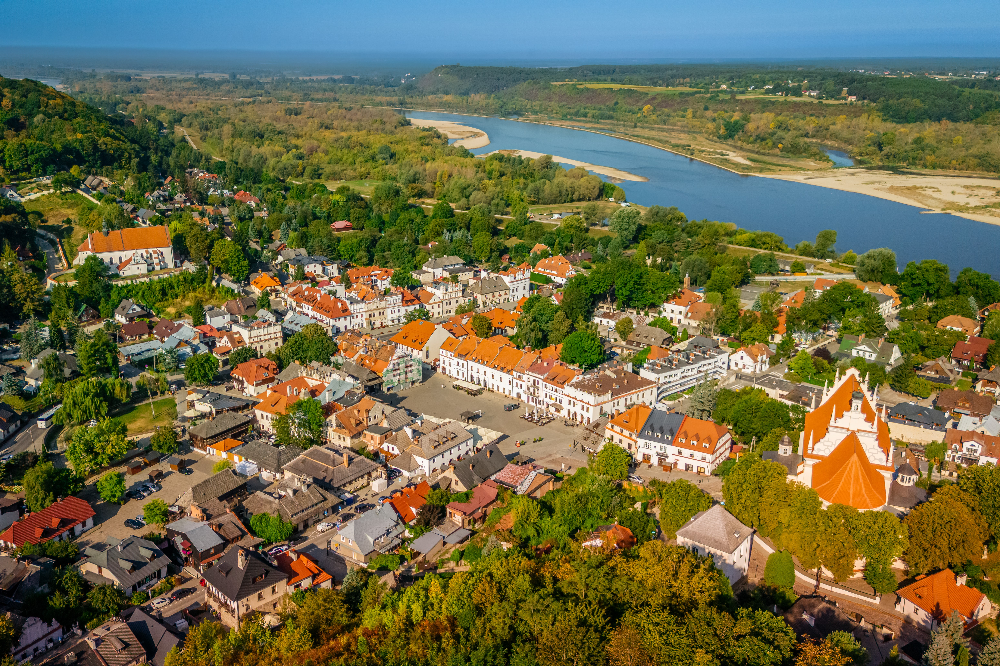

Historia Krakowa
Kraków, dawna stolica Polski i serce kulturowe kraju, ma ponad 1000-letnią historię. Od X wieku był kluczowym ośrodkiem państwa Piastów, a w 1038 roku stał się główną rezydencją królewską. Lokowany na prawie magdeburskim w 1257 roku, rozwijał się jako potęga handlowa i naukowa (Uniwersytet Jagielloński założony w 1364 r.), pełniąc funkcję stolicy do końca XVI wieku.
Oto kluczowe etapy w historii Krakowa:
- Początki (do X/XI w.): Według legend związany z Krakiem, historycznie był głównym grodem Wiślan. Początkowo cmentarzysko, z czasem zyskał znaczenie polityczne.
- Stolica Polski (XI w. – 1596): Kraków był głównym ośrodkiem władzy Piastów, a później Jagiellonów. Kazimierz Wielki założył nowe miasta, w tym Kazimierz (dzisiejsza dzielnica), znacząco rozwijając Kraków.
- Złoty Wiek i przeniesienie stolicy: W XVI wieku Kraków był centrum kultury renesansowej. W 1596 roku król Zygmunt III Waza przeniósł dwór do Warszawy, jednak koronacje wciąż odbywały się na Wawelu.
- Okres zaborów (1795–1918): Po rozbiorach miasto znalazło się pod panowaniem austriackim (Galicja). Kraków stał się „ostoją polskości” i ważnym ośrodkiem kultury.
- II wojna światowa (1939–1945): 6 września 1939 roku miasto zostało zajęte przez wojska niemieckie. Stało się stolicą Generalnego Gubernatorstwa.
- Czasy nowoczesne (od 1945): W 1949 roku rozpoczęto budowę Nowej Huty, stalinowskiego miasta, które w 1951 roku zostało włączone do Krakowa. Historyczne centrum zostało wpisane na listę UNESCO.
- Obecnie Kraków jest jednym z najważniejszych ośrodków turystycznych, naukowych i kulturalnych w Europie Środkowej.
Atrakcje turystyczne
| Nazwa | Zdjęcie | Opis |
|---|---|---|
| Wawel |  |
Zamek królewski i katedra |
| Rynek Główny |  |
Największy średniowieczny rynek w Europie |
| Sukiennice |  |
Historyczna hala targowa |
| Kazimierz |  |
Dzielnica żydowska z klimatem |